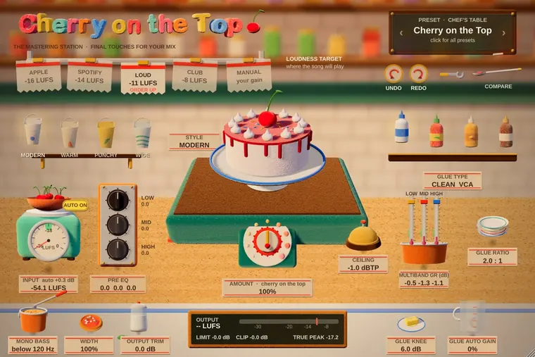

Mastering plugin · VST3 · AU · AAX
Cherry on the Top Mastering
Finish a track with one dial: the cherry lands on top at 100%.

What is Cherry on the Top Mastering?
Cherry on the Top is a one-dial mastering plugin. Play the loudest part once so the kitchen scale learns your level, choose a loudness target (Apple, Spotify, Loud, Club or your own) and a style (Modern, Warm, Punchy or Wide), then turn the cake dial. Multiband control, glue, true-peak ceiling and a loudness meter are all baked in.
What's on the plate
- Cake dial How much finishing it does
- Tickets Loudness target: Apple, Spotify, Loud, Club or Manual
- Cartons Style: Modern, Warm, Punchy or Wide
- Kitchen scale Learns your input level
- Candy thermometers Live multiband gain reduction
- Bell and slate True-peak ceiling and output loudness meter
- Spoon Compare at matched level
Great for
- Finishing demos and releases fast
- Hitting streaming loudness targets
- Comparing honestly, without being fooled by volume
Works in your DAW
AU, VST3 and AAX on Mac, VST3 on Windows. Logic Pro, Ableton Live, Pro Tools, FL Studio, Cubase, Studio One, Reaper, Bitwig, GarageBand and more. macOS 11 or later (Apple silicon and Intel), Windows 10 and 11 (64-bit).
- Mac: AU, VST3 and AAX (PACE-signed) · Apple-notarised installer, opens with no warnings
- Windows 10 and 11: VST3 (64-bit)
- Full-screen mode inside the plugin, so the whole kitchen fills your screen
From $19, yours forever with free updates. Or get it with all 16 in the Full Fridge Bundle, Monthly Pass or Breakfast Club.
Questions from the breakfast table
What kind of plugin is Cherry on the Top Mastering?
Cherry on the Top Mastering is a mastering plugin. Finish a track with one dial: the cherry lands on top at 100%.
Is Cherry on the Top Mastering a VST3, AU or AAX plugin?
All three: AU, VST3 and AAX on Mac (Apple silicon and Intel), and VST3 on Windows 10 and 11 (64-bit).
Does Cherry on the Top Mastering work in Logic Pro, Ableton Live and FL Studio?
Yes. Cherry on the Top Mastering works in Logic Pro, Ableton Live, FL Studio, Cubase, Studio One, Reaper, Bitwig, GarageBand and Pro Tools, and any other DAW that loads AU, VST3 or AAX plugins.
Is there a free trial of Cherry on the Top Mastering?
Yes. Make a free account and use every feature for 3 days, no card needed. If you buy, the same install unlocks.
How much is Cherry on the Top Mastering?
From $19, yours forever with free updates. It also comes with all 16 plugins in the Full Fridge Bundle, the Monthly Pass, Breakfast Club and the Lifetime Pass.
Recipes using this plugin: Mastering chain for beginners
More from the menu
Orange Crusher distortion · Popping Candy glitch and stutter · Spice Shelf EQ equalizer · Popcorn Sandwich Compressor compressor · Spaghetti Delay delay · Bread Oven Reverb reverb · Food Fight performance multi-effect · Ghost Pepper Clipper clipper · Hot-o-Pan auto-pan · Gummy Gate gate · Milkshake Chorus chorus · Burnt Toast Tape Machine tape saturation · Noodle Filter filter · Muesli Granular granular · Butter Spread stereo widener